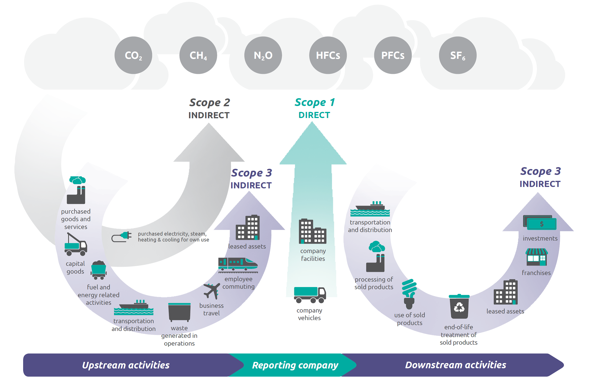

SEARCH TIP Press CTRL + F (Windows and Linux) or CMD + F (Mac) to search within this page.
Introduction
The Carbon footprint module, integrated in the CSR Insight application, enables you to calculate greenhouse gas emissions for an activity, a product, or an organization.
This documentation has three goals:
-
Make you Understand the Key Concepts of the Carbon Footprint
-
Explain briefly the steps to follow in the CSR Insight application to Carry Out your Carbon Footprint
-
Indicate where you can View the Reporting of your Carbon Footprint Data
At the end of this documentation, you can view a detailed diagram explaining how the carbon footprint works.
Understand the Key Concepts of the Carbon Footprint
In this section, you can learn more on the key concepts of the carbon footprint:
The Three Main Concepts
The carbon footprint has three main concepts:
Emission Factors
Emission factors are coefficients used to convert activity data into emissions in CO2e.
Emission factors are classified into categories and sub-categories in the Management of Emission Factor Categories screen.
A supported operational control mode is assigned to emission factor categories:
-
Operated: The facilities and equipment are operated by a legal person and its entities.
-
Not operated: The facilities and equipment are not operated by a legal person and its entities.
-
And so on.
A supported financial control mode is also assigned to emission factor categories:
-
Owned: The facilities and equipment are owned by a legal person and its entities.
Not owned: The facilities and equipment are not owned by a legal person and its entities.
-
And so on.
For more information on the financial and operational control modes, see the Financial and Operational Controls key concept below.
Greenhouse Gas Emissions
The greenhouse gas emissions are gases present in the atmosphere that help intercept infrared radiation from the sun. They help maintain a constant temperature on Earth.
The Kyoto Protocol aimed to reduce emissions of six greenhouse gases by at least 5% compared to 1990 levels between 2008 and 2012:
-
The carbon dioxide: CO2
-
The methane: CH4
-
The nitrous oxide: N2O
-
The hydrofluorocarbon: HFCs
-
The perfluorocarbons: PFCs
-
The sulfur hexafluoride: SF6
In the CSR Insight application, the emissions of an organization, an activity, a product are calculated by gas, then added together to give the final result in CO2e:

For more information on the valuation value and the amortization period, see the Valuation and the Amortization Period key concepts below.
Emission Reporting Formats
Emission reporting formats, also called versions in the CSR Insight application, are the regulations on which the carbon footprint must be based:
-
BEGES V4, or
-
BEGES V5, or
-
GHG protocol
For the BEGES V4 and GHG protocol, the emissions are classified by scope:
-
Scope 1: Direct emissions generated by the company or the organization's activity and that are owned or controlled by the company or organization.
-
Scope 2: Indirect emissions (consequences of the activities of the company but occurring from sources not owned or controlled by it) that are associated with the energy consumption
-
Scope 3: Other indirect emissions, such as the people's mobility, upstream and downstream of immobilized goods, use and end-of-life of sold products

For the BEGES V5, the emissions are also classified by category:
-
Direct emissions
-
Indirect emissions associated with the energy
-
Indirect emissions associated with the transport
-
Indirect emissions associated with bought products
-
Indirect emissions associated with sold products
-
Other indirect emissions
Depending on the reporting format, there are several emission posts by scope or category.
You can set up the emission reporting formats in the Regulatory Framework Management screen.
The Other Key Concepts
The other key concepts of the carbon footprint are:
Uncertainty
Activity indicators and emission factors can have an uncertainty percentage.
Uncertainty measures the possible difference between the value entered for an activity indicator or an emission factor and its actual value.
To set up the default uncertainty for an indicator regardless of the campaign, go to the Indicator Management screen.
To set up the uncertainty for an indicator in a given campaign, go to the Indicator Management screen, then to the Data Collection Campaigns screen.
To set up the emission factor uncertainty, go to the Emission Factor Valuation screen.
Valuation table
The valuation table contains a coefficient that allows you to modify the activity indicator weight.
This coefficient is included in the emission calculation formula mentioned in the Greenhouse Gas Emissions section above.
To set up the valuation table, go to the Management of Valuation Tables screen, then to the Indicator Management screen.
Amortization Period
The amortization period is the accounting life of the item whose emissions are calculated. When you enter the amortization period, the volume of emissions corresponding to the indicator is broken down over the number of years of amortization.
To set up the default amortization period for an indicator regardless of the campaign, go to the Indicator Management screen.
To set up the amortization period for an indicator in a given campaign, go to the Indicator Management screen, then to the Data Collection Campaigns screen.
Financial and Operational Controls
Depending on the complexity of its structure, a legal person, except for collectivities, includes one or multiple entities. The legal person and each of its entities control different equipment and facilities. All these equipment and facilities constitute the organizational scope of the legal person or one of its entities.
Financial control and operational control, which are two management modes, allow you to determine the organizational scope:
-
Financial control: 100% of the equipment and facilities on which the legal person exercises financial control are included in the organizational scope.
-
Operational control: 100% of the equipment and facilities on which the legal person exercises operational control, that is, it operates, are included in the organizational scope.
To set up the financial and operational control for an indicator in a given campaign:
-
Enable the selection of the control mode and, if you want, set up the default financial and operational control, in the Indicator Management screen.
-
Set up the options for the Financial control and the Operational control drop-down menus displayed in the Data Collection Campaigns screen:
-
Follow the procedure written in the Carry Out your Carbon Footprint section below from step 1 to step 8.
-
Select the financial and operation controls for the desired indicator in the Data Collection Campaigns screen.
-
Partner / Interco
NOTE Partner and Interco (abbreviation for Intercompany) are synonymous terms. One is used in the Administration screens, the other in the Reporting screens.
When multiple entities in the same group share resources, there is a risk of double counting of emissions.
To avoid double counting, you can select an entity as a partner for one or more indicators:
-
By default, regardless of the campaign, on the Indicator Management screen, or
-
In given campaigns on the Data Campaign Campaigns screen.
This partner entity is then the entity which recovers the value of emissions bound to these indicators.
Reference Year
First publication year of the carbon footprint. The other carbon footprints are compared with the reference year.
The reference year is also called the year to compare in the CSR Insight application.
Declaration Year
Data are collected during the declaration year. The report is published based on the data collected during the declaration year. The declaration year is the last year with representative and auditable data.
The declaration year is also called the reporting year in the CSR Insight application.
Avoided Emissions
Avoided emissions are emission reductions produced by the activities, products, and/or services of a legal entity that are realized outside the scope of its activity.
Avoided emissions are assessed in relation to a baseline scenario.
Location Based and Market Based
Location based and Market based are two different calculation methods for scope 2 emissions.
This piece of information is associated with the emission factor:
-
Location-based emission factor: A reference emission factor calculated each year for a given region or country taking the weighted average of scope 2 emission factors. This emission factor type is also called "grid-average emission factor".
 Example
Example
Your company is located in France and you must follow the BEGES standards. Your scope 2 emissions will be calculated based on the French grid-average emission factor.
In France, the electricity consumption comes from nuclear (36.6%), oil (30.3%), natural gas (15.5%), sustainable energy (13.9), coal (2.9%), and non-sustainable waste (0.8%) in 2024. The French grid-average emission factor will be calculated by taking the weighted average of this energy production mix.
-
Market-based emission factor: An emission factor provided by your energy supplier. This emission factor type is also called "supplier-specific emission factor".
Example
Your company is located in the USA and you must follow the GHG protocol standards. Your energy supplier provides you energy produced from wind power (50%) and natural gas (50%). An emission factor based on the weighted average of its own production mix will therefore be provided by this supplier.
For BEGES V4 and BEGES V5, Location based is the required calculation method.
For GHG protocol, you can choose between the Location based and Market based calculation methods, or use both.
To help you further choose your calculation method, you can refer to the section "Calculating Emissions" of the GHGP Scope 2 Guidance.
{kind=link}
Decision tree diagram: Determining which calculation methods to use for scope 2 emissions
Source: GHGP Scope 2 Guidance
To associate a calculation method with an emission factor, go to the Emission Factor List screen.
Carry Out your Carbon Footprint
To carry out your carbon footprint, you must follow several steps in the CSR Insight application:
-
Configure the carbon footprint data for each activity indicator in the Indicator Management screen, regardless of the campaign.
To help you fill in the Carbon balance block, see the following key concepts sections:
-
Optional: Configure the carbon footprint data for an activity indicator in a given campaign in the Data Collection Campaigns screen.
-
Configure the emission factor categories and sub-categories in the Management of Emission Factor Categories screen.
-
Configure the emission categories and sub-categories in the Management of Emission Categories screen.
-
Configure the emission factor list in the Emission Factor List screen.
-
Configure the emission factor values in the Emission Factor Valuation screen.
-
Optional: You can add the emission factor sources (Carbone 4, IE, ADEME, and so on) in the Documentary Sources of Emission Factors screen.
-
Associate the emission factors with the activity indicators in the Association of Emission Factors with Activity Indicators screen.
-
Set up the emission restitution formats in the Regulatory Framework Management screen.
-
Enter data for the activity indicators in the Data Collection Campaigns screen.
Your data is automatically converted into the quantity of greenhouse gas emitted in CO2e.
You can now view the reporting of your carbon footprint data. See the View the Reporting of your Carbon Footprint Data section just below.
View the Reporting of your Carbon Footprint Data
When your carbon footprint data is well set up, you can view the data reporting.
You can view the emission value in a CO2e unit and weight for a given year and organization in the Analytical Reporting by Emission and Analytical Reporting by Emission Factor screens.
{kind=link}
To view each step of the carbon footprint calculation for a given indicator, year, and organization, go to the Carbon Footprint Audit screen.
The Details of Emission Posts by Entity screen compares, for each organization, the value and weight of each emission post between the reference year and the declaration year.
You can export emission posts for a given version in an Excel file with the Emission Post Export feature.
To get your regulatory carbon footprint ready for publication:
-
Assess your carbon footprint for a given year, organization, and version on the Carbon Footprint Assessment screen.
-
Export your data.
{kind=link}
{kind=link}